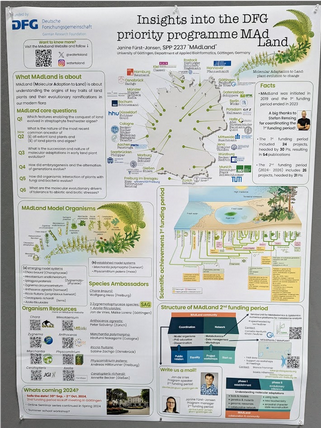
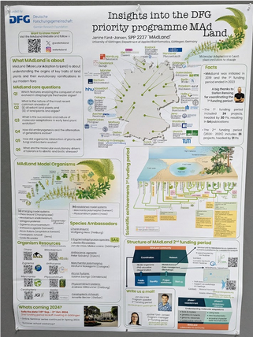

The Conference Molecular Biology of Plants (MBP) of the Section Plant Physiology and Molecular Biology of the DBG took place at Hennef, North Rhine-Westphalia, Germany, from 4th to 7th March 2024.
MAdLand (Molecular Adaptation to Land) is a DFG-funded research consortium exploring the molecular mechanism behind the transition from water to land, from alga to land plant.
Several MAdLand posters were presented at this conference, two of which highlighted MAdLands collaborative ties to DataPLANT. Janine Fürst-Jansen (University of Göttingen) presented a poster entitled “Insights into the DFG priority programme MAdLand” providing a broad overview of the consortium, its goals and research questions, as well as tools and resources. An integral part of the vision of the MAdLand consortium as a whole, is its commitment to FAIR science, and as such DataPLANT tools and resources such as ARCs are an essential part of MAdLand’s research data management (RDM) strategy. MAdLand and DataPLANT are committed to aligning their efforts, exemplified by the Memorandum of Understanding (MoU) between both parties on the joint collaboration in research data management in fundamental plant research.
As a further part of the MoU, MAdLand has developed a set of resources useful for plant resources, and made them freely available for use by the scientific community, with the support of de.NBI and Galaxy. The second poster entitled "MAdLand Resources & Tools" covered a core set of these resources, and was presented by Deepti Varshney and Saskia Hiltemann (University of Freiburg). The poster presents MAdLand's cutting-edge resources useful for plant research: MAdLand DB (GenomeZoo), TAPscan v4, and DataPLANT ARCs.
MAdLandDB represents a comprehensive protein database accessible through the Galaxy web-based platform. With a particular focus on non-seed plants and streptophyte algae, it delivers non-redundant, reliable genome sequences utilising BLAST and Diamond search functionalities for comparative and evolutionary questions in plant biology. The database includes reference/outgroup genomes of various lineages, including, e.g., fungi, animals, phylo-diverse algae, bacteria, and archaea. It is actively developed and maintained in the MAdLand context. The intuitive Galaxy interface ensures effortless data access and retrieval and remains consistently updated with the latest genomic insights.
TAPscan v4 (currently in beta) is an advanced tool for genome-wide annotation of plant transcription-associated proteins (TAPs). TAPs (TFs and TRs) are key to understanding the development and evolution of plant form and function. Access to reliable, up-to-date classifications of TAPs enables comparative analyses that expand our knowledge of plant transcriptional regulation. Moreover, TAPscan has been integrated into the Galaxy framework, so users may employ it for their own datasets.
Finally, MAdLand is committed to contributing to the DataPLANT Research Data Management (RDM) platform, which supports the creation of ARCs (Annotated Research Contexts) to encapsulate all research data (raw and metadata) in a FAIR, open and standardised manner. ARCs are an RO-crate implementation and provide an easy-to-use way to re-analyze data generated by other labs, e.g. in Galaxy. Conversely, analyses performed in Galaxy can also be exported directly as RO-crates. The MAdLand project is committed to creating ARCs for each of its funded projects. Several MAdLand ARCs have already been published, with several more ARCs set to be released in the coming months.

 

Acknowledgements: The presenters would like to thank the organisers of MBP2024 for providing the opportunity to present a poster at the conference. The presenters would also like to thank the MAdLand/Rensing lab, Galaxy, NFDI4PLANT and de.NBI.
Links
- Link to poster “MAdLand Tools & Resources”
- Link to poster “Insights into the DFG priority programme MAdLand”